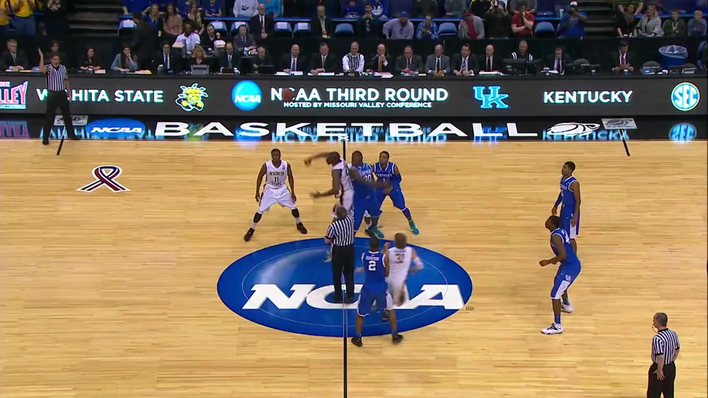
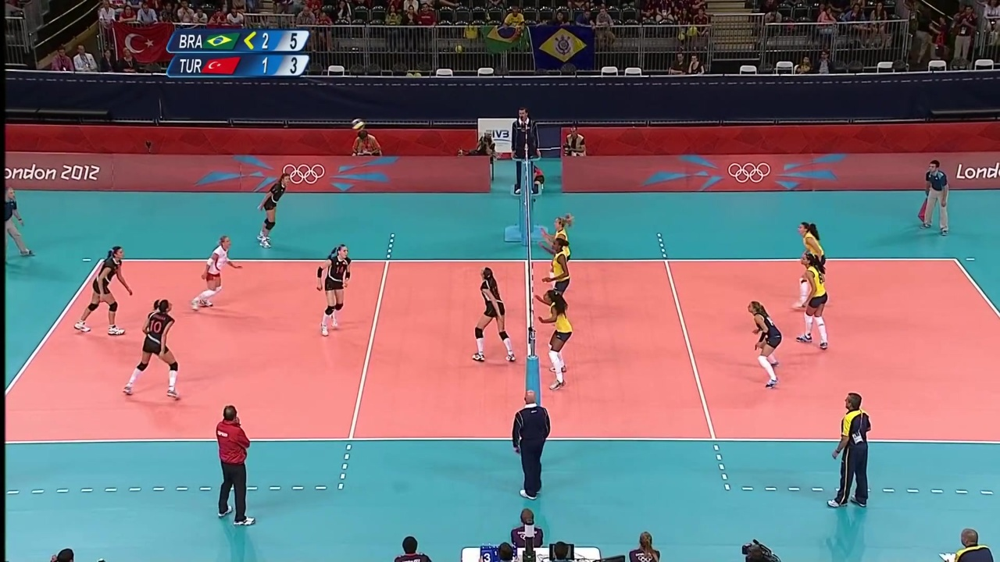
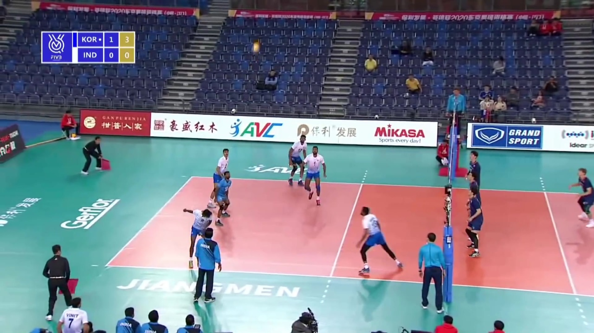

🏀 RT-DETRv2 · SportsMOT player detection
Single-class player detector — smallTech/rtdetr-sportsmot, fine-tuned on SportsMOT. mAP@50 0.938 on 45 unseen sequences. Runs entirely in your browser (transformers.js + ONNX, q8) — no server, your images never leave this page.
Drop a sports frame here or click to choose a file



Loading model (~45 MB, cached after first visit)…